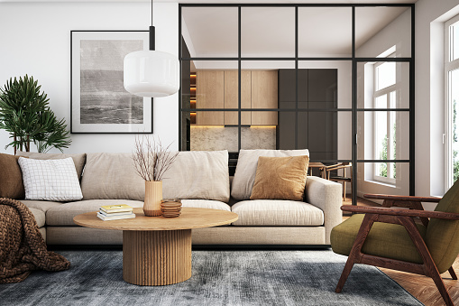
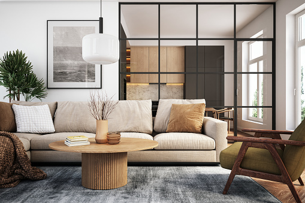
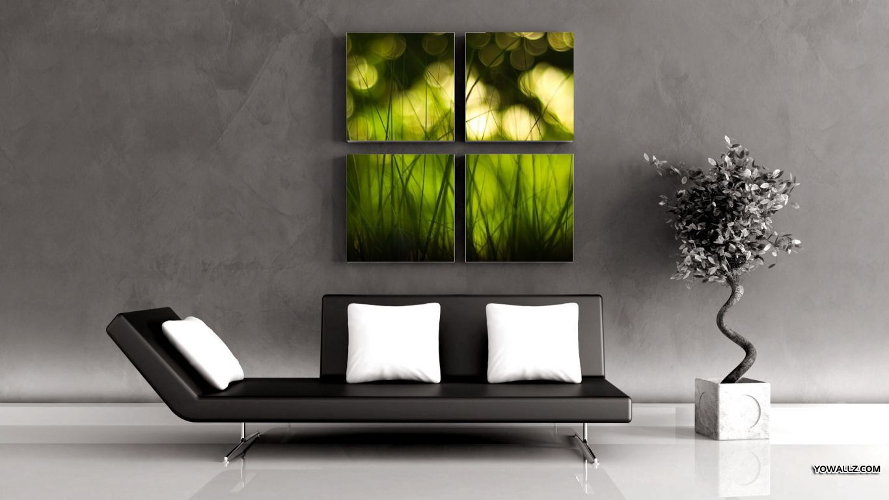
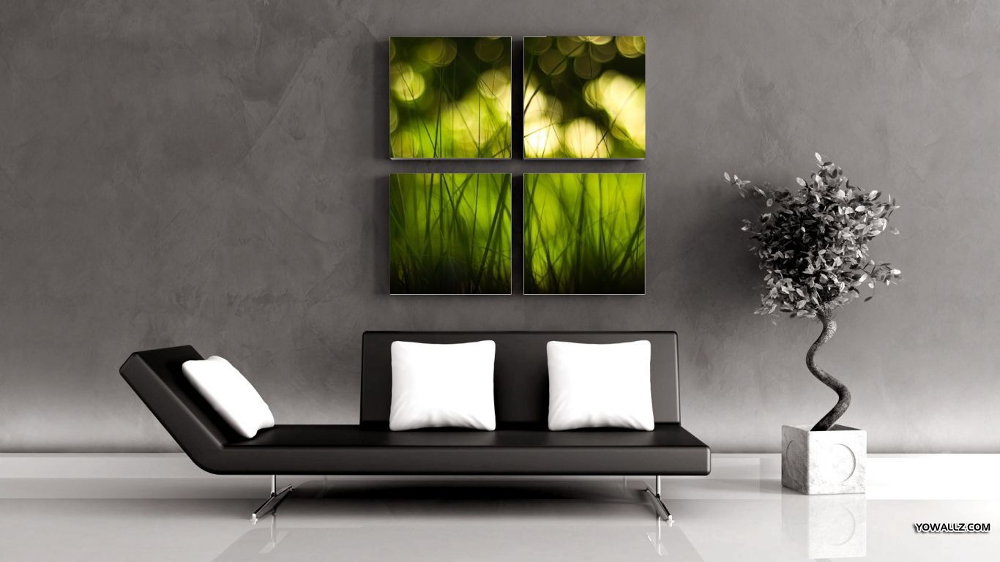
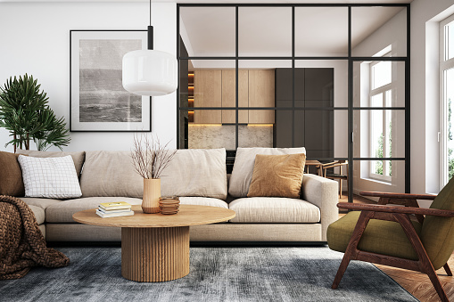
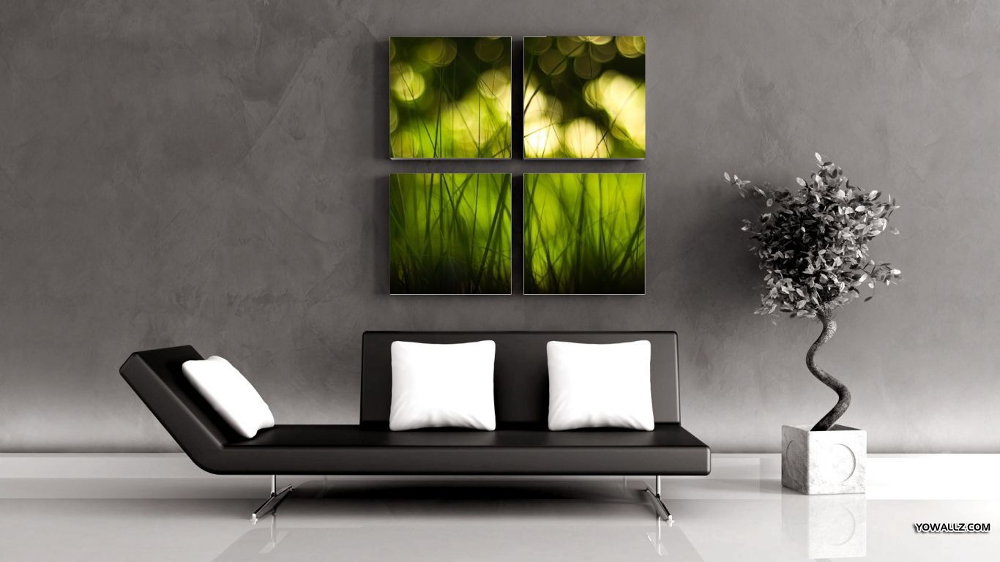

OUR PRODUCT CARAGORY

 

 

Mobel House is the best furniure brand in pakistan that manufactures
the highest-quality classic, modern and luxurious furniture for a
unique touch of elegance and class to home interiors.


We are living in an age when online shopping is a trend and continues to rise. It is now easy to get wood furniture designed products delivered to your doorsteps with a quick order from a gadget. InterWood takes pride in the online furniture sale of a wide range of Pakistani furniture ranging from home to office. Equipped with a talented workforce having a constant endeavour to raise the standards of design, durability, and quality of products, it delivers the optimal.
With decades of foothold experience in the furniture industry, InterWood offers affordable wooden furniture at the best prices in Pakistan. Furniture that will make your living spaces look prolific with versatile, high quality, and stylish furniture.
Avoid the hassle of physically visiting a store and order your favorite product with a few clicks online for the best wood furniture design in Pakistan. Visit our furniture categories in the menu bar and get to find your favourite Pakistani furniture online. Free delivery is available for Lahore, Karachi, Islamabad, Rawalpindi, Peshawar, and Gujranwala.
Interwood is the best furniture brands in Pakistan that manufactures the highest-quality classic, modern and luxurious furniture for a unique touch of elegance and class to home interiors. From vintage to contemporary furniture design and royal to classical furniture online, embedded is the essence of uniqueness with keen craft.
Ranging from your bedroom to the kitchen, products from various furniture categories are available. Add gleam and sparkle to your home with unique decorative accessories, which fit your budget.
Ergonomically designed office furniture provides comfort and ease while you accomplish day-to-day tasks in an office. Save your time and remove the hassle of on-site shopping with furniture online shopping accessible for all.
Add that personality and modern element to your home with ottomans, poufs, relaxing chairs, bean bags, and many others. The home accessory range is something not to miss on as it includes small things like coasters for your drinkware, serving trays up to center rugs for a furnished look of the rooms.
Browse the best contemporary furniture design online with InterWood. Commitment to quality and customer satisfaction is our ultimate priority. Now, using the website, you can easily choose the online furniture design suiting your taste. Deviation from the colors displayed on the website may subject to the device you are using or the angle of the item is photographed.
Finding the furniture of your choice is not always convenient and at hand. Interwood commits to deliver your favorite furniture in Pakistan online delivering at your doorsteps, be it classic, vintage, or modern. State-of-the-art technology is utilized to manufacture the best furniture with modern geometric shapes and minimalist accents. Whether you are looking to spice up your office with a trending smart spaces range or contemporary yet minimalist décor for indoors, they provide a high standard in all. The prices of most of the articles are available online, request a quote for others new design furniture.
Interwood is the leading furniture store in Pakistan producing hi-end modern furniture with hi-tech manufacturing system in place. A strong emphasis on high quality and high standards is at the core of the company.
Furniture is a pivotal part of any living space, home, or office. Interwood is now providing high-quality furniture for home or office through its online furniture store. Motivated and enthusiastic people at Interwood work for a profound online shopping experience at your end. Free delivery is available for all products in Karachi, Lahore, Islamabad, Rawalpindi, Peshawar, and Gujranwala.